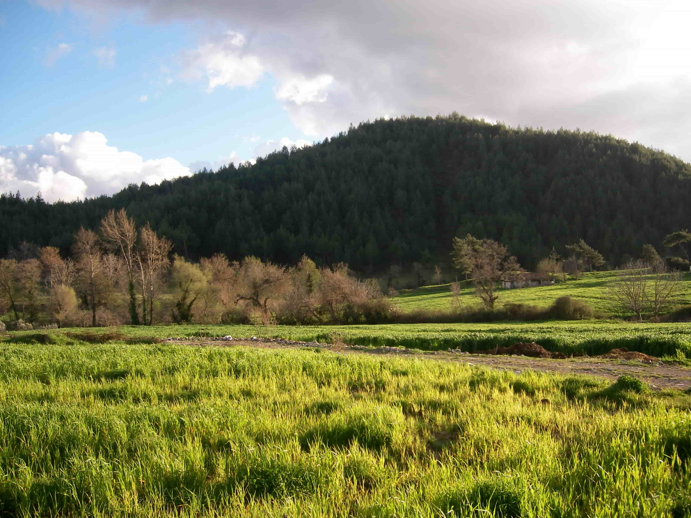
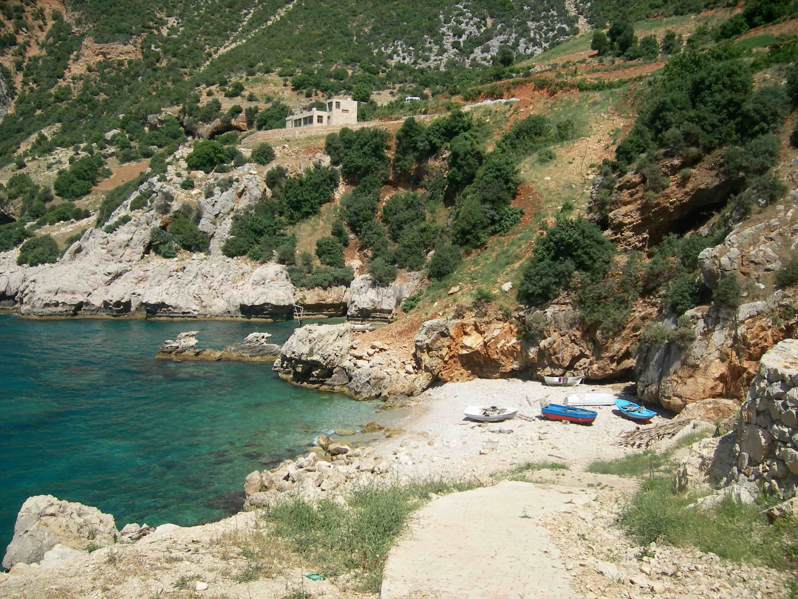

Yayladağı, Hatay'a bağlı ilçedir ve Türkiye'nin coğrafi olarak en güneydeki ilçesidir. 36°- 42° paralelleri arasındaki Türkiye'nin 36'ncı paraleline yakındır. Yayladağı sınır kapısı ve gümrüğü Türkiye'nin Suriye'ye açılan kara kapılarındandır. Komşu ilçeleri; Altınözü, Samandağ ve Defne'dir.
Tarihçe
İslam bölgeye Abbasiler tarafından getirilmiştir, Selçuklu Hanedanı ile devam etmiştir. İlçe merkezinin 9. ve 10. yüzyılda kurulduğu sanılmaktadır. Avar Türkleri’nden Savcılar Boyunun başı Kasım Bey bu toprakları Bizans’tan alıp bir cami, bir köprü ve bir okul yaptırmıştır. Kasım Bey Cami ve Kasımbey Köprüsü bugüne kadar ulaşmıştır. Osmanlı İmparatorluğu döneminde ilçeye Ordu-Muradiye isimleri verilmiştir. Yavuz Sultan Selim döneminde bu bölgeye Türkleri yerleştirmiştir. Yavuz Sultan Selim Mısır Seferi dönüşünde burada ordusu ile birlikte konakladığı için buraya “ordu” denilmiştir. 1918’de İngilizler, daha sonra Fransızlar tarafından işgal edilen Hatay, 1938’de Bağımsız Hatay Cumhuriyeti’ne katıldı. 1940'ta adı “Ordu” ile karıştığı için “Yayladağı” olarak adı değiştirildi. Bu adı “Yayladağı” isimli dağından almıştır. Hatay’ın kurtuluş günü olan 23 Temmuz Yayladağı’da kurtuluş günü olarak kutlar.
Coğrafya
Yayladağı ilçesi Hatay’ın güneyine düşmektedir. İlçenin doğusunda ve güneyinde Türkiye-Suriye sınırı bulunur. Kuzeybatıda Samandağı, kuzeyde Antakya ile komşudur. Alanı 366 km²’ dir. Denizden yüksekliği ise 450 m’dir.
İdari durumu
Yayladağı İlçesi’nin 47 tane mahallesi vardır. Bezge (Yeditepe) mahallesi ilçeye 11 km uzaklıktadır.Karaköse,ilçeye 15 km; Kışlak ise 18 km uzaklıktadır. İlçenin merkezinde üç tane mahalle vardır. Güneyde Çamaltı Mahallesi, Kuzeybatıda Dutlubahçe Mahallesi, Kuzeydoğuda Kurtuluş Mahallesi.
İklim
İlçede Akdeniz İklimi görülmektedir. Yazlar sıcak ve kurak, kışlar yağışlı ve ılıktır. Bölge yüksek ve dağlık olduğu için kar yağışı görülür. Hatay’ın diğer ilçelerine göre daha serindir.
Bitki Örtüsü
Genelde çam, sandal ve meşe ağaçlarından oluşan ormanlar yer kaplar. Ormanların olmadığı yerlerde makiler hakim durumdadır. Defne, kekik, zakkum, sumak, keçiboynuzu, kızılcık, atlas çiçeği ve mor menekşeler bulunur.
Tarım

İlçede bulunan arazinin 96.510 dekarı tarım alanı geri kalanı kayalık ve ormanlıktır. Ekilen alanda 15 bin dekar zeytin, 15 bin dekar sebze, 42 bin dekar hububat, 9 dekar meyve, 8 dekar tütün, 5 dekar baklagiller ve 250 dekar bağ bulunur. İlçe arazisi dağlık ve verimsiz olduğu için modern tarım gelişmemiştir. Tarım araçlarından karasaban kullanılır. Son yıllarda pulluk ve traktör sayısı artmıştır. Sulu tarım gelişmemiştir. Kaynak çevrelerinde meyve ve sebzeler genellikle yer kaplar. Arazi dağlık ve kıraç olduğundan verim düşüktür. Hububat verimi de düşüktür. Genelde gelir kaynağı tütün, defne yağı, zeytin ve meyvedir. İlçede defne yaprağı toplanmakta ancak defne işleyecek bir işletme bulunmamaktadır.
İlçenin Aldığı ve Sattığı Ürünler
Tütün, zeytin, zeytin yağı, ceviz, defne yağı, peynir, tereyağı, deri ve incir satar. Buna karşılık ev ve giyim eşyaları, hububat, hazır yiyecek maddeleri satın alır. Bulgur, tarhana, et, mercimek, mısır, erik, kayısı, fasulye, peynir, süt, yoğurt, çökelek, sebze ve meyve tüketilir.
Hayvancılık
En çok keçi beslenir. Daha sonra sığır gelir. Koyun az da olsa beslenir. Kümes hayvanı ve binek hayvanları da beslenir.
Sağlık
İlçede sağlığı tehdit edici bulaşıcı hastalık yoktur. İlçe merkezinde bir tane hastane, bir tane sağlık ocağı, hükûmet tabipliği, Karaköse, Bezge, Kışlak ve Şakşak mahallelerinde birer tane sağlık ocağı bulunur. Yine ilçe merkezinde bir diş polikliniği ve iki eczane vardır.
Eğitim
Merkezde bir Yatılı İlköğretim Bölge Okulu, 3 ilköğretim Okulu, Mustafa Kemal Üniversitesi'ne bağlı 1 meslek yüksek okulu, 2 Lise, Kız Meslek Lisesi ve Halk Eğitim kursları vardır. Okullar Atatürk İlköğretim Okulu, Mehmet Akif İlköğretim Okulu, Yavuz Selim İlköğretim Okulu, Yatılı İlköğretim Bölge Okulu, Yayladağı Lisesi, İmam Hatip Lisesi, Kız Meslek Lisesi'dir. Okuma oranı yüksektir. Okulsuz köy olmayıp, okullardaki öğretmen eksikliği vekil öğretmenlerle giderilmektedir ve yatılı güzel sanatlar lisesi bulunmaktadır.
Engebeler
Yayladağı İlçesi bütünüyle dağlık bir araziden oluşur. İlçenin doğusunda Yayladağı, batıda Kel dağı, güneyde Salcan Dağı, kuzeyde Ziyaret Dağı bulunur. Araplar Dağı, Ayvacık Dağı, Oğlakçı ve Mezere Yaylaları bulunmaktadır. Dağlar arasında vadiler ve küçük düzlükler yer alır. Akdeniz kıyıları kayalık ve diktir. İlçenin en yüksek dağı Keldağı’dır (1739). Akarsular En önemli akarsuyu Kureyşi Deresi’dir. Suriye topraklarına geçip Akdeniz’e dökülür. İlçe merkezinde içme suyu Karapınar ve Gökmeryem kaynaklarından sağlanır.
Ulaşım
Uluslararası E-5 yolu Yayladağı’ndan geçer. Türkiye- Suriye kapısına 5 km uzaklıktadır. Antakya’ya 51 km uzaklıktadır. Hatay ile ilçe arasında düzenli bir ulaşım imkânı bulunmamakta ve minibüsler ile ulaşım sağlanmaktadır.
Yaşayış ve Geçim Kaynakları
Geçim kaynağı tarımdır. (Tarım ürünleri olarak, bodur elma, nar, defne, zeytin, meyve ve sebze, tütün yetiştirilir.) Az da olsa küçük esnaflık, çanak-çömlek yapımcılığı ve testicilik yapılır. Merkezde TEKEL'e ait 150 kişinin çalıştığı tütün işletme evi bulunmaktaydı.Özelleştirme sonrası kapatılmıştır. Dışarıya göç veren bir ilçedir. Özellikle hasat döneminde Amik ve Çukurova’ya pamuk işçisi olarak giden fazladır.
Yöreye Özgün Kullanılan Kelimeler
Bermil: Varil, çöp kovası vb.
Süllüm: Merdiven
Döl: Çocuk, soy
Ölük: Ölmüş, vefat etmiş
Aş: Düğünlerde verilen yemek
Aleç: İlaç, merhem
Orduevi: Ordövr, ön soğuk yemek
Zeyt: Zeytinyağı
Elpeçen: Küçük kertenkele
Ağnanmak: Gelişigüzel yatmak
Gidişmek: Kaşınmak
Yayladağı'nda Akdeniz kıyısında Kara Mağara bölgesi
Süvari: Çay bardağında Türk kahvesi
Bire: Erkek çocuk
Kele: Kız çocuk
Maallef: Kül tablası
Karabalcan: Patlıcan
Manadura: Domates
Keme veya Patata: Patates
Koca: İhtiyar adam
Aspap: Giyecek
Pisik: Kedi
Yağlık: Eşarp
Silesil: Yoğurtlu bir tür yemek
Zahter: Kekik
Ağdamla veya Ağartı: Süt ürünleri
Kernep: Su kabağından tas
Mişmiş: Kayısının küçüğü
Payam: Badem
Bezzakke: Salyangoz
Aymüşlemek: Karıştırmak, mıncıklamak
Bakdeniz: Maydanoz
Attun: Siyah, küçük, buruşuk zeytin
Hölüp: Testi, toprak çanak
İt üzümü: Böğürtlen
Öte: İleri
Melhafe: Yorgan Yüzü
Elleham: Belki de,sanmak (allahu´alem)
Meatter: Zavallı insan
Hoşhana: Kase
Lakın: Çamaşır yıkanan leğen
Sakiil: Laubali insan
Gümbel veya cara: Büyük su testisi
Kama: Bıçak
Süğürtmek: Koşmak
Dıkılmak: İçeri girmek
Pinnek: Kümes(tavuk,Kaz)
Sokmak: Çıkmaz Sokak
Taka: Dolap
Seyirtmek: Koşmak
Istıfıl ol: Ne halin varsa gör
Tarihi eserler
Merkezde 1000 yıllık Kasım Bey Camii ve Kasımbey Köprüsü, 500 yıllık Hacı Hüseyin Camii ve Romalılardan kalma köprü vardır. Kel Dağı’nda Barlaham Manastırı, Ayışığı Köyü’nde Kızlar Sarayı ve Çabala Köyü’nde de bir kilise vardır. Karacurun mahallesinde taş devrinden kalma oymalı mağara vardır. Olgunlar mahallesinde de kilise kalıntıları vardır. Merkezde diğer bir tarihi bina iki katlı Askerlik Şubesi Başkanlığı binasıdır. 1930 yılında Fransızlar tarafından karakol olarak yapılan tarihi binanın malzemesi Fransa'nın Marsilya kentinden gemilerle İskenderun'a oradan da katırlarla Yayladağı'na getirilmiştir. Fransız işgalinden geriye ayakta kalan tek binadır. Aydınbahçe Mahalleninde de Kale Boğazı adlı yerde eski zamanlardan kalma bir kalenin kalıntıları vardır.
Turizm

Tarihi eserlerin tanıtımı iyi yapılamadığından turizm gelişmemiştir. Turistler sınır kapısından geçmek için gelirler.Karacurun mahallesinde ağrılara deva olan "Yel Dede" ve çocuk sahibi olamayanların uğrak yeri "Aslan Dede" ziyareti bulunmaktadır. Karamağara denilen deniz kıyısında, tarih öncesi bir takım kaya boşlukları bulunmakta ve tarihi önemi bilinmemektedir. Aynı zamanda Karamağara'da denize girilebilmekte ve balık tutulabilmektedir.
217351015
Iskenderun Teknik Universitesi